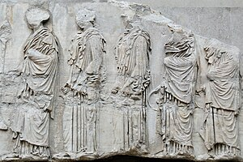

Arte Griego
El arte griego abarca esculturas, cerámicas y pinturas que han influido en el mundo del arte durante siglos. Este arte se desarrolló en varias etapas, comenzando con el período geométrico, seguido por el período arcaico, clásico y helenístico. Cada etapa muestra una evolución en términos de estilo y técnica, reflejando los cambios culturales y filosóficos de la sociedad griega. Los artistas griegos se centraron en representar la belleza idealizada del cuerpo humano, la armonía y el equilibrio. Esta búsqueda de perfección y proporción ha tenido una influencia perdurable en el arte occidental, siendo una referencia constante en la historia del arte.
Ejemplos Destacados
Explora algunas de las obras de arte más emblemáticas de la antigua Grecia, como las esculturas de Fidias y las pinturas de cerámica. Las obras de Fidias, como las estatuas de Atenea y Zeus, destacan por su grandiosidad y detalle. Las cerámicas griegas, por otro lado, ofrecen una ventana a la vida cotidiana y las creencias mitológicas de los antiguos griegos. Cada pieza de cerámica cuenta una historia, ya sea de un héroe mitológico, una escena de batalla o una representación de los dioses. Estos ejemplos ilustran la variedad y riqueza del arte griego, que combina técnica y narrativa de manera magistral.
Escultura Griega
La escultura griega es famosa por su búsqueda de la perfección y realismo. Entre las obras más conocidas se encuentran el Discóbolo de Mirón y el Doríforo de Policleto. Estas esculturas muestran un profundo conocimiento de la anatomía humana y el movimiento. Los escultores griegos se esmeraban en representar el cuerpo humano en su forma ideal, capturando tanto la belleza estética como el dinamismo del movimiento. En el período clásico, la escultura alcanzó un nivel de sofisticación sin precedentes, con el desarrollo del "contrapposto", una postura naturalista que da a las figuras un aspecto más relajado y realista. Los temas frecuentemente representaban a dioses, héroes y atletas, simbolizando la excelencia y el esfuerzo humano.
Discóbolo de Mirón
Doríforo de Policleto
Cerámica Griega
La cerámica griega no solo era utilizada para fines utilitarios, sino también como una forma de arte. Los jarrones y ánforas decoradas muestran escenas de la vida cotidiana, mitología y eventos históricos. Un ejemplo destacado es el ánfora de figuras negras de Exequias, que representa con gran detalle escenas mitológicas y héroes legendarios. Las técnicas de decoración incluían figuras negras y figuras rojas, cada una con su estilo particular y un nivel de complejidad que requirió una gran habilidad por parte de los artistas. Además de su valor estético, la cerámica griega proporciona una valiosa fuente de información sobre las costumbres, vestimentas y rituales de la época, convirtiéndose en una herramienta clave para entender la vida en la antigua Grecia.
Ánfora de figuras negras de Exequias
Arquitectura Griega
La arquitectura griega se caracteriza por sus templos y columnas icónicas. Los órdenes arquitectónicos más conocidos son el dórico, jónico y corintio, cada uno con sus propias particularidades en cuanto a decoración y proporciones. El Partenón, ubicado en la Acrópolis de Atenas, es uno de los monumentos más representativos de la arquitectura griega clásica, construido en honor a la diosa Atenea. Los templos griegos no solo eran lugares de culto, sino también demostraciones de poder y devoción, reflejando la importancia de la religión en la vida pública y privada. La simetría, el uso de columnas y el equilibrio de las estructuras son elementos que han inspirado a arquitectos durante siglos, estableciendo las bases para la arquitectura occidental posterior.
Partenón